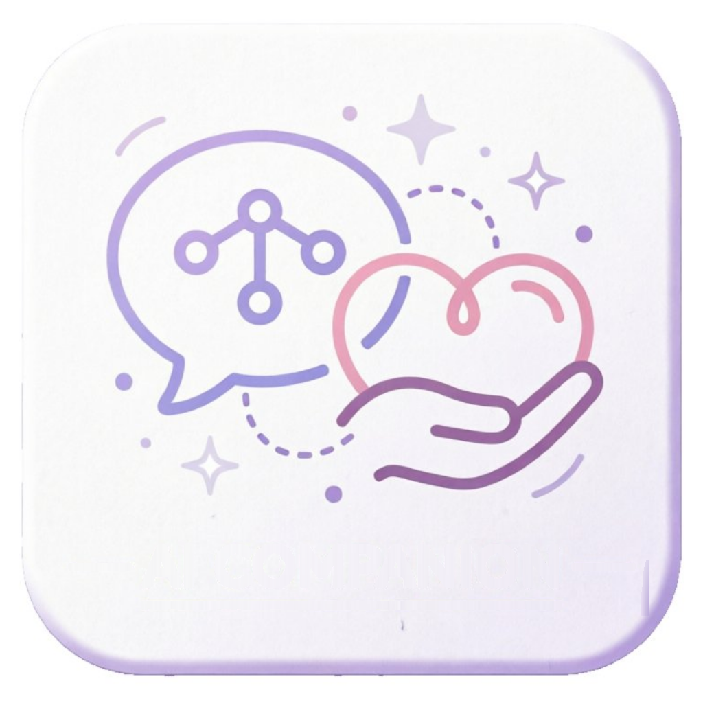
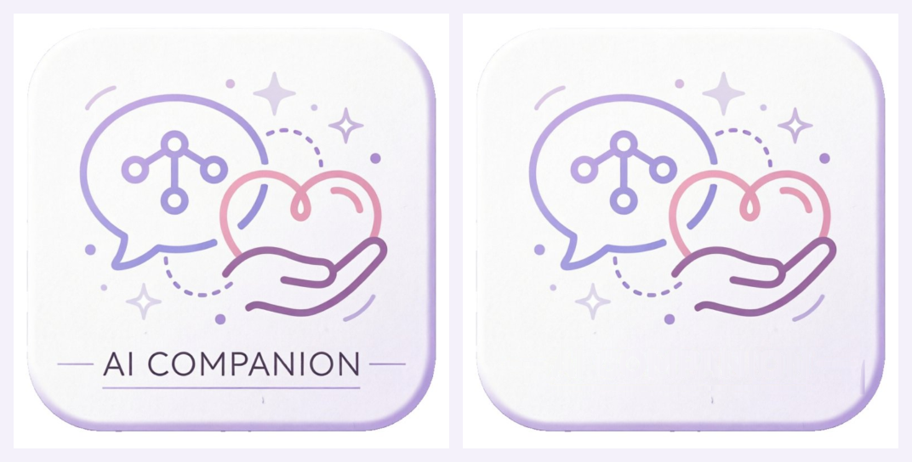
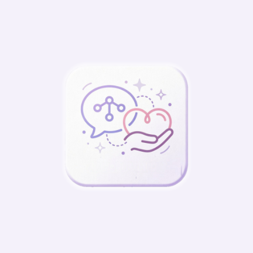
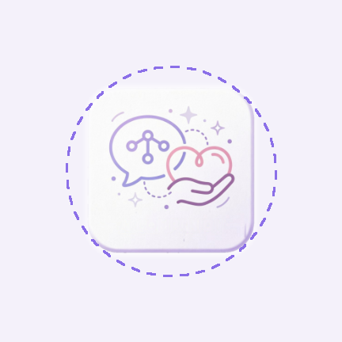
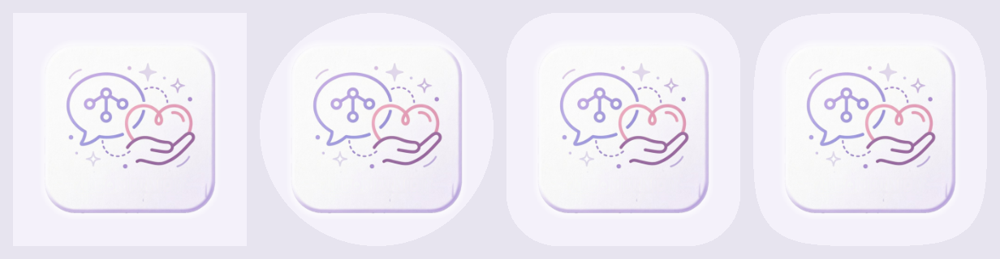

按你的要求去掉「AI COMPANION」文字；对话气泡、心、手、星星、虚线轨迹与圆角卡片一笔未动。

aapt2 全资源编译 exit 0
先逐列用 y=774 与 y=901 两行插值出卡片底色模型，再只替换与底色差异大的像素（字形、短横线、下划线及其 3px 抗锯齿边缘），文字带内其余像素一个不动。第一版曾把整段 y=775–900 全量重绘，结果抹平了卡片自身的细微质感、留下一条可见的浅色横带，已废弃。最终只重绘带内 29.3% 像素。
lum<215 像素 14376 → 0；lum<230 仅剩 1 个，与上方干净带的底色噪点同量级
#F4F1FA。

自适应画布固定 108dp，启动器只取中间约 72dp 视口并套自己的形状遮罩，保证不被裁的是中心 66dp 圆（半径 33dp）。原先 56dp 是为了让横贯底部的文字两端留在圆内；文字移除后，最远内容变成图形外缘（约 0.42 × 56 = 23.5dp，实测深色像素 21.2dp）。尺寸保持不变以免引入无谓改动，多出来的 11.8dp 余量留给厂商视差缩放；若想让图形更饱满，把 _make_adaptive.py 的 CARD_DP 调大即可。
| 层 | 资源 | 说明 |
|---|---|---|
| 前景 | mipmap-*/ic_launcher_foreground.png | 无文字原图缩到 224px（432 画布 = xxxhdpi）居中，RGBA 透明底 + 12px 圆角羽化 |
| 背景 | values/colors.xml → #F4F1FA | 不透明纯色，取自原图卡片浅紫白 |
| 装配 | mipmap-anydpi-v26/ic_launcher.xml | <adaptive-icon> 引用上面两层 |
| 兼容 | mipmap-*/ic_launcher.png | API < 26 用同一张无文字图，5 档已同步重刷 |
AndroidManifest.xml 未改动：只声明 android:icon、没有 roundIcon，所有启动器都走同一个 adaptive 资源。
aapt2 compile --dir 编译整个 res/ exit 0；xmllint 格式合法_remove_wordmark.py 产出无文字主图 artwork-master-1024-noword.png（带文字原稿 artwork-master-1024.png 保留）；再用 ICON_SOURCE=<无文字主图绝对路径> 分别重跑 _make_icons.py（20 个平台 PNG）与 _make_adaptive.py（5 档前景 + 装配 XML + 预览图）。三个脚本全为纯 Python，不依赖 Pillow，可重复执行；_make_icons.py 的备份改为幂等，重跑不会覆盖那 20 个原始 Flutter 默认图标。
<monochrome> 层，本次未做，图标始终显示原配色。只移除自适应层：python design/app-icon/_make_adaptive.py --revert。
恢复带文字版用户图：把 ICON_SOURCE 指回 artwork-master-1024.png 重跑上面两个生成脚本即可。
恢复工程最初的 Flutter 默认蓝色 logo：_backup-original-icons/ 里 20 个文件按对应路径复制回去，或直接 git restore 那 20 个受版本控制的文件。
user-icon-source.jpg · 带文字原稿：artwork-master-1024.png · 当前主图：artwork-master-1024-noword.png · 自适应分层：_adaptive/ · 历史草稿：_deprecated-cartoon/、_drafts-linework/